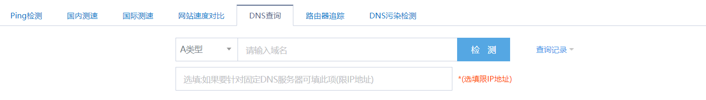
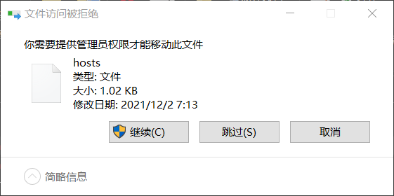

今天早上上 GitHub 又没上上去，去网上找了一下原因是 GitHub 的 CDN 域名遭到了 DNS 污染，导致无法连接使用 GitHub 的加速分发服务器，才使得国内访问速度很慢.
可以通过修改本地 hosts 文件来绕过 DNS 解析来加速.
- 首先打开站长工具
- 填入 <Github.com>
 - 将检测列表里的 TTL 值最小的 IP 记为 a.b.c.d.
- 使用记事本打开
hosts文件，位于 <C:\Windows\System32\drivers\etc>. - 将以下内容加在
host文件末尾：1
2
3a.b.c.d www.github.com
a.b.c.d github.global.ssl.fastly.net
a.b.c.d nodeload.github.com其中 a.b.c.d 是上述步骤中记录的 IP 地址.
如果没有修改权限可以将host文件移出该文件夹，修改完成后再移回去.
系统会确认你授权管理员权限.
 - Done！试试访问GitHub吧！
我发现还是有时候不太行———— 希望有更好办法的能分享一下.
Reference
Something else
这条博客的封面P站ID: [ID:46018784].